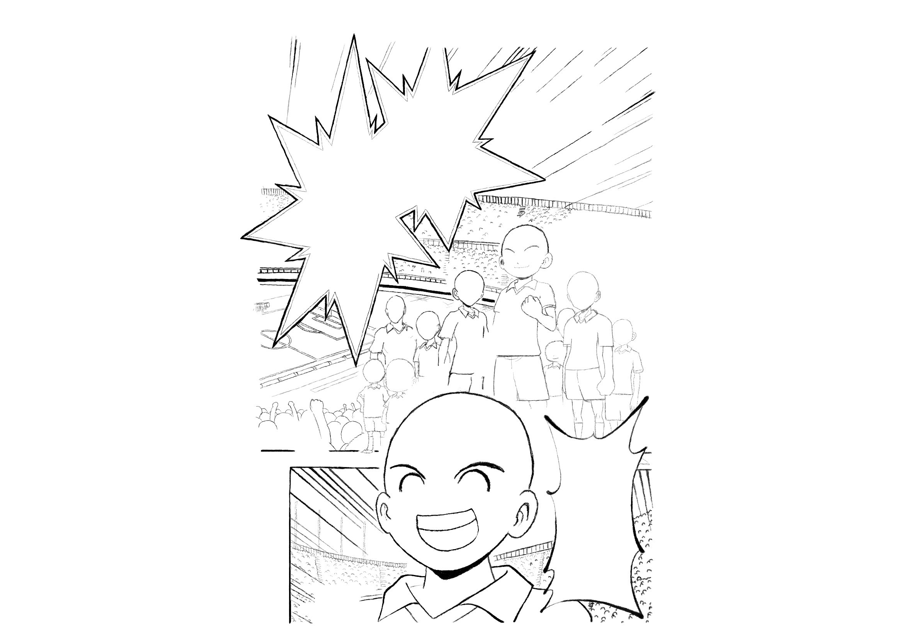
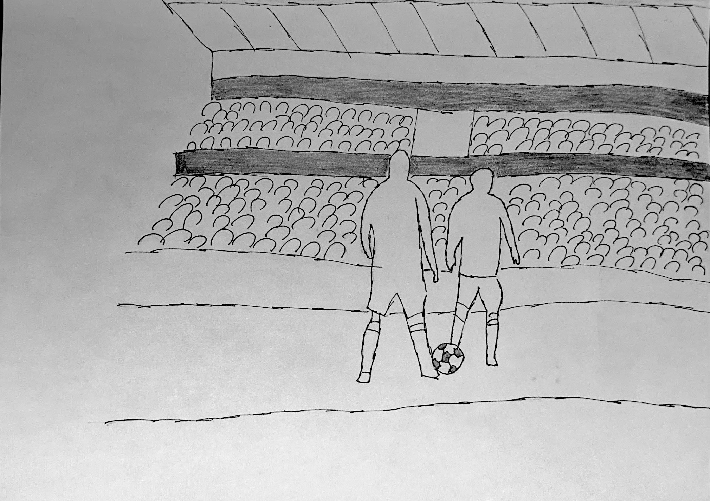

The Switch

Un match de football.
Le joueur star du moment accélère sur le côté du terrain.
Il percute en fan en tribune. Choc entre deux.
Le lendemain, ils se réveillent dans le corps de l'autre.
Il se réveille dans une maison. Il se regarde dans le miroir et est choqué. Il n'est pas dans son corps !
Il doit aller à l’entraînement.
Malgré le changement de corps, le fan se sent confiant dans la peau de l’athlète.
Il fait un match catastrophique. Il coûte la victoire à son équipe.
Déterminé, il travaille dur et n'abandonne pas.
Match France - Italie. Une ambiance électrique.
Ils se regardent dans le tunnel des vestiaires… Un doute…
Match très serré, le ballon est entre les deux joueurs, choc !
Ils se relèvent… De retour dans leur corps.
Il ne supporte pas la pression, il veut tout abandonner.
Il ne veut plus s'entrainer.
Match France - Italie. Il retrouve le professionnel qui est dans sa peau.
Ils se regardent dans le tunnel des vestiaires… Un doute…

Le fan dans la peau de l’athlète perd le match. Il a été catastrophique
L’athlète dans la peau du fan devient une star mondiale.
Il se réveille dans une petite chambre. Il se regarde dans le miroir et crie.
Il doit aller à l’entraînement.
Il impressionne tout le monde par son talent.
Il grimpe les échelons mais se rend compte de la difficulté.
Il décide d’essayer de s’entendre avec eux. Leur support l’aide à surmonter les épreuves. Il devient plus fort et est sélectionné en équipe nationale
Match France - Italie. Une ambiance électrique.
Ils se regardent dans le tunnel des vestiaires… Un doute…
choc entre les deux
Il se relève... De retour dans son corps.
Ils ne réechangent pas de corps au final et restent rivaux
Cette expérience leur permet de se challenger mutuellement tout au long de leur carrière et de se tirer mutuellement vers le haut en s’affrontant continuellement au sommet.
il decide de partir seul

Malgré son travail acharné il n'est pas seléctionné en equipe national
Il échoue dans sa carrière, enchaine les blessures. Il arrete le football et a fini à la rue.